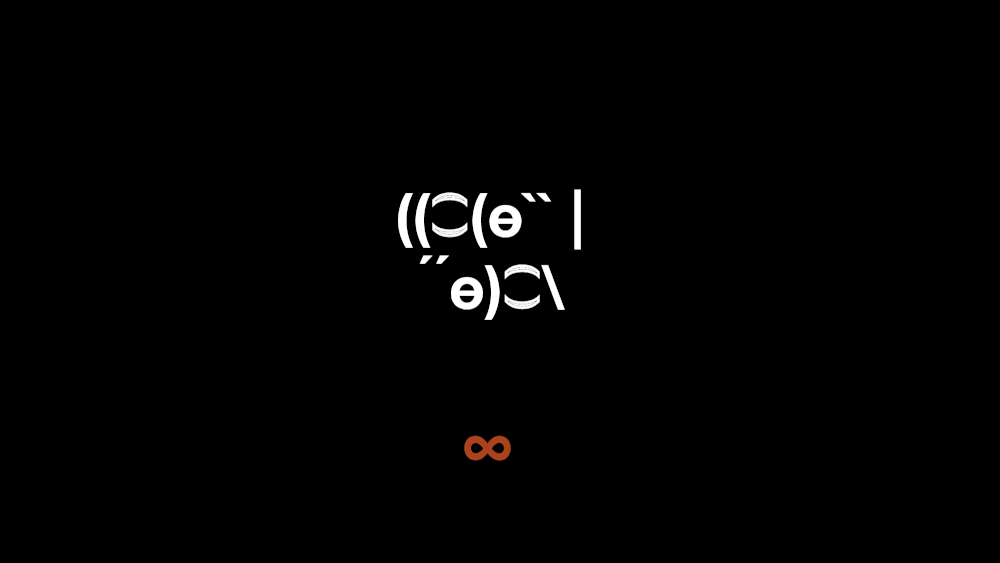
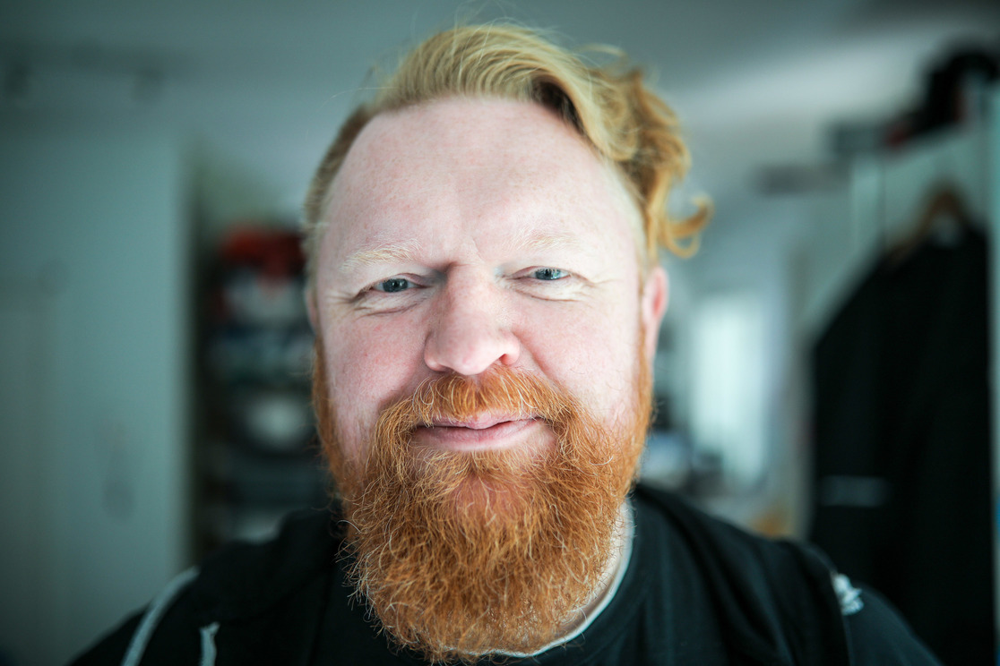
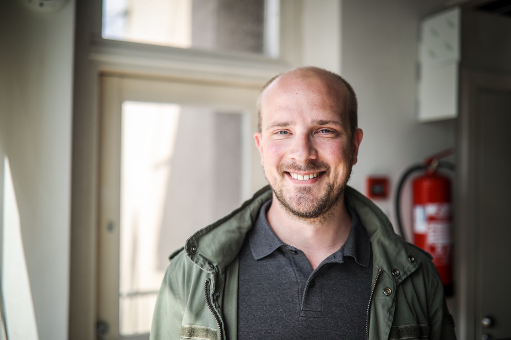
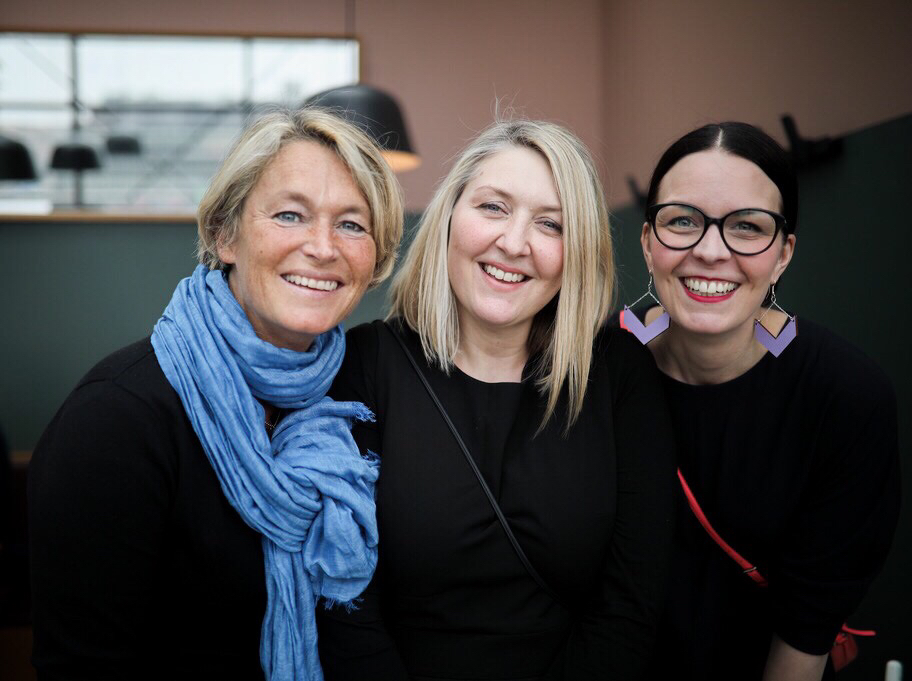

8-bit-sheep

@8_bit_sheep | info@8-bit-sheep.com
Digital and Data Strategy Boutique
This sheep means business
We do consulting for strong brands
We help with problems regarding the digital in general and data in particular
Transformation, enterprise innovation, technology,
user experience, data and analytics.
These clever little lambs…
…all senior and acclaimed in their fields, work on the most difficult problems in the space
We help clients make sense of all the buzzwords
Data science, machine learning, AI, vim, emacs or blockchains
Using a pool of the most talented professionals in their field, 8-bit-sheep teams are purpose built to fit the clients problems
We've seen things few people would've believed
The media industry was just the start, you're probably next
We can help you dream of 8-bit-sheep
The Flock:
The Company Bellwether

Sami Kallinen @sakalli, aptly titled as the company’s bellwether, is part of the generation who first hacked 8-bit computers in the early 80’s. A seasoned executive with three superpowers — data & AI, visionary leadership, and media. For Sami, transformation is about understanding that everything today is software. Kallinen founded his first professional online media service almost 25 years ago. For three years he worked in the CDO role at Yle, the Finnish Broadcasting Company, where he was responsible for driving the modernisation of the application architecture, and introducing AI and data platforms early on to the organisation. Later, he worked in the management team of KSF Media for two years with CDO & CTO responsibilities. Sami has implemented radical transformation programmes both in terms of product development and leadership. Since 4 - 5 years ago, when it became apparent that data & AI are both a question of business hygiene and competitive advantage, the subject has very much been at the centre of Sami’s focus.
Senior Baartner
Leevi Kokko @leevikokko has been online for the past 20 years, always driving change, whether on the client side or as a consultant. Leevi likes to help brands understand customers on all levels, utilizing methods from market intelligence, surveys and focus groups to analysis of digital data in all its forms. Leevi began his career at Sonera, moved on to Satama Interactive and from there to start Finland’s first service design agency Ego Beta. He joined e-commerce startup Fruugo as business analytics manager and later Fonecta as the marketing manager for digital services. At Yle Leevi built digital analytics practice from ground up, and started Yle Tunnus. Before joining 8-bit-sheep as a partner Leevi spent two years at DNA where he lead the B2C commercial operations team within the Online unit.
Full Stack Baad-ass
Jaakko Ojalehto @zeikko Jaakko is a full stack developer who enjoys making the world a better place by creating the tools that enable people to level up their lives. This has included web analytics tools for journalists, visually stunning news websites for young adults and a news mobile application where you can converse and vote for things that matter. Jaakko goes nuts over test automation, code coverage, code linting, code reviews, continuous integration, infrastructure as code and other ways to build high performance quality apps that are easy to maintain and develop further. Jaakko built his first commercial website in the age of 15, since then he has been on a ride that took him to master HTML, CSS, SQL, JavaScript, PHP and more. He got into the world of web analytics, social media, search engine optimization and marketing while working for NetBooster in Helsinki and Paris. At Yle Jaakko developed tools and products ranging from inhouse analytics to mobile apps used by hundreds of thousands of customers. In the past 4 years Jaakko has mostly been using JavaScript, Node.js React, React Native, AWS, Docker, Terraform, Redis and PostgreSQL.
Front and Bääkend Ram
Henri Kinnunen @hkinnunen has a long history in tech. He's been working in the field for almost 10 years mostly as a software engineer. He's fanatic about building quality software that just works. It includes delivering state-of-the art build pipelines and well tested software as well as polishing the processes of how software is build. Henri has experienced how it is to work as a consultant as well as a team member of a fast growing startup. He's a full-stack software engineer who is able to help customers in every step of the process of creating software. Henri has devops mentality and hands-on software development experience from wide-variety of business domains including but not limited to: banking, telecommunications, social marketing, online gaming and media. Henri's main technical competencies lie on JVM languages such as Java and Scala, but he has also worked with languages like Node.js, Python and Clojure. Henri is also fluent with front-end such as React.
Sheep Analytics Officer

Simo Ahava @SimoAhava is a recognized expert on customizing web analytics and tag management solutions to improve the entire “life cycle” of data collection, processing, and reporting. His main areas of expertise lie with Google Analytics and Google Tag Manager, and Google has appointed him as a Google Developer Expert in these fields. He is especially interested in the interface between marketing and development, and his main focus is on increasing awareness, skills, and critical thinking around data. Simo also focuses on agile organizations and how to introduce analytics as an integral component in the agile process. Simo also writes a popular blog on all things Google Analytics and Google Tag Manager development, data quality, and agile at www.simoahava.com. An experienced speaker and prolific blogger, Simo can be seen and heard in conferences, product forums, support communities, and developer meetups alike.
The Shepherds

We have the enormous pleasure of introducing our shepherds! Say baa to the board of 8-bit-sheep! The board is a wonderful combination of complementing talents and experiences. Together they have a firm command of strategy, digital business development, media and communications as well as ideas and brand building.
Hanne Kettunen @HanneKettunen is an experienced leader in the digital service space with background as a startup founder and working with some of the largest brands in Finland through consultancies such as Avaus and Siili. Currently she works as the COO at Avanto Ventures which works as a bridge between classic brands and the startup space.
Mary Gestrin @marygestrin is a seasoned board professional and leader in the media industry. Journalist by trade. In her previous job she was responsible for the Areena service at Yle and currently she leads the communications team at Nordic Council and Nordic Council of Ministers.
Piëtke Visser @ppotkis is the celebrated and prize-winning designer and ideas developer as well as a partner at the agency Kuudes in Helsinki. She is also the creative behind the 8-bit-sheep identity.
“I’m a humanist that dreams of 8-bit sheep.”
That’s how Sami Kallinen, the founder of 8-bit-sheep, introduced himself on Twitter for many years. The company name refers to Philip K. Dick’s classic sci-fi novel Do Androids Dream of Electric Sheep and the necessary combination of arts and technology.
— @8_bit_sheep | info@8-bit-sheep.com